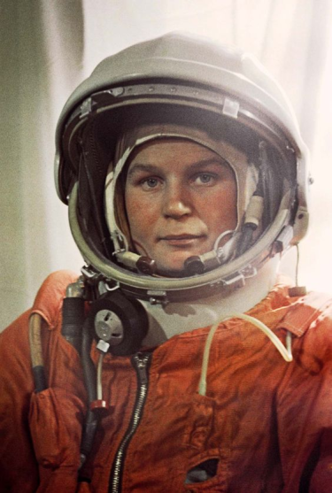

➳ Valentina TereshkovaSpace Pioneer"Once you've been in space, you appreciate how small and fragile the Earth is." | |
Valentina Tereshkova: The Trailblazing Cosmonaut | |
|  | ♡ Early Life and AmbitionsValentina Vladimirovna Tereshkova, born on March 6, 1937, in the Yaroslavl region of the Soviet Union.Valentina Tereshkova's early life was marked by the hardships of World War II and her family's humble background. Despite these challenges, she exhibited an early fascination with aviation and the boundless skies. This passion led her to join a local flying club, where she learned to pilot aircraft. Valentina Tereshkova's achievement was a milestone in space exploration and paved the way for future generations of female astronauts. After her space mission, she held various political positions and received numerous awards for her contributions to science and space exploration. ﹌﹌﹌﹌﹌﹌﹌﹌﹌﹌﹌﹌﹌﹌﹌﹌﹌﹌﹌﹌﹌﹌﹌﹌﹌﹌﹌﹌﹌﹌﹌﹌﹌﹌﹌﹌﹌﹌﹌﹌﹌﹌﹌﹌﹌﹌﹌﹌﹌﹌﹌﹌﹌﹌﹌﹌﹌﹌﹌﹌﹌﹌﹌﹌ ҉ The Journey to the StarsIn 1963, at the age of 26, Valentina Tereshkova achieved a feat that would forever etch her name into the annals of space exploration. On June 16, aboard the Vostok 6 spacecraft, she embarked on a mission that made her the first woman to venture into space. For nearly three days, she orbited the Earth 48 times, conducting experiments and providing invaluable data to the scientific community. ﹌﹌﹌﹌﹌﹌﹌﹌﹌﹌﹌﹌﹌﹌﹌﹌﹌﹌﹌﹌﹌﹌﹌﹌﹌﹌﹌﹌﹌﹌﹌﹌﹌﹌﹌﹌﹌﹌﹌﹌﹌﹌﹌﹌﹌﹌﹌﹌﹌﹌﹌﹌﹌﹌﹌﹌﹌﹌﹌﹌﹌﹌﹌﹌ ༓ LegacyValentina's historic journey shattered stereotypes and proved that women were equally capable of conquering the cosmos. She became an icon of gender equality in science and space exploration.Her achievements paved the way for generation and generations of astronauts , which inspired lots of women to pursue or continue their careers in STEM. ﹌﹌﹌﹌﹌﹌﹌﹌﹌﹌﹌﹌﹌﹌﹌﹌﹌﹌﹌﹌﹌﹌﹌﹌﹌﹌﹌﹌﹌﹌﹌﹌﹌﹌﹌﹌﹌﹌﹌﹌﹌﹌﹌﹌﹌﹌﹌﹌﹌﹌﹌﹌﹌﹌﹌﹌﹌﹌﹌﹌﹌﹌﹌﹌ ☆ A Lasting InspirationValentina Tereshkova's legacy extends far beyond her singular journey into space. She shows that with determination and pursuit of one's dreams, even the stars are within reach! ﹌﹌﹌﹌﹌﹌﹌﹌﹌﹌﹌﹌﹌﹌﹌﹌﹌﹌﹌﹌﹌﹌﹌﹌﹌﹌﹌﹌﹌﹌﹌﹌﹌﹌﹌﹌﹌﹌﹌﹌﹌﹌﹌﹌﹌﹌﹌﹌﹌﹌﹌﹌﹌﹌﹌﹌﹌﹌﹌﹌﹌﹌﹌﹌ ⚘ ConclusionValentina Tereshkova's historic mission, her contributions to science, and her enduring legacy as a trailblazer in space exploration serve as a reminder that the human spirit knows no bounds. Her journey into the stars continues to inspire and add fuel to dreams of those who dare to reach for the unknown, just as she did on that historic day in 1963. |
✼ List of webpages:
﹌﹌﹌﹌﹌﹌﹌﹌﹌﹌﹌﹌﹌﹌﹌﹌﹌﹌﹌﹌﹌﹌﹌﹌﹌﹌﹌﹌﹌﹌﹌﹌﹌﹌﹌﹌﹌﹌﹌﹌﹌﹌﹌﹌﹌﹌﹌﹌﹌﹌﹌﹌﹌﹌﹌﹌﹌﹌﹌﹌﹌﹌﹌